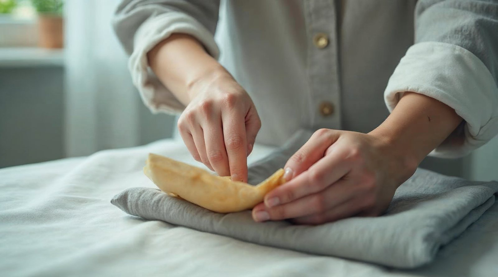
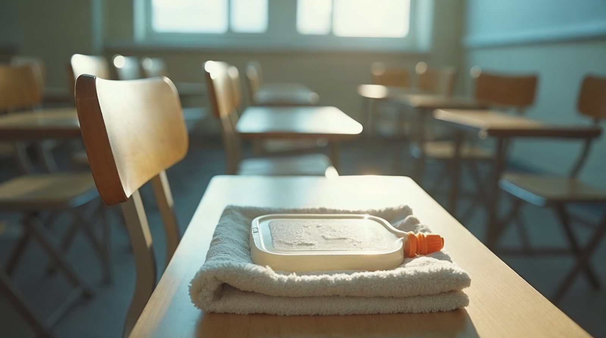
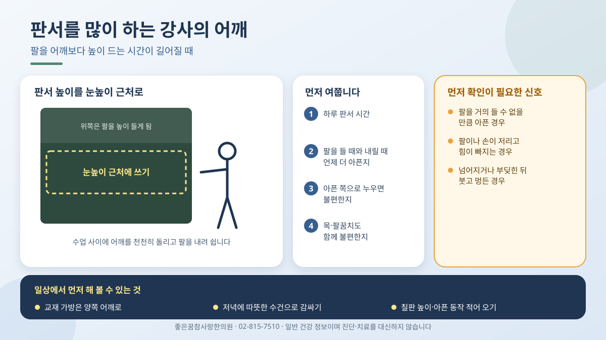

이종호 한의사 감수좋은꿈참사랑한의원 대표원장 (한의사 면허번호 19769)발행 2026-11-24 · 수정 2026-11-26
이 글의 차례
- 왜 이런 불편이 생길 수 있나요
- 왜 오전보다 저녁 수업에서 더 아플까요?
- 먼저 이렇게 여쭙니다
- 일상에서 먼저 해 볼 수 있는 것
- 판서 어깨 통증은 다른 어깨 불편과 어떻게 다른가요?
- 상황별 예시
- 스스로 점검해 보세요
- 수업 사이 5분, 어깨를 이렇게 쉬게 해 보세요
- 강의 준비 단계에서 판서 부담을 줄이려면?
- 집에 돌아와서는 어떻게 쉬면 좋을까요?
- 한의원에서 함께 살필 수 있는 경우
- 강의가 몰리는 시기에는 어떻게 버티나요?
- 다시 오시면 무엇을 이어서 보나요?
- 얼마나 지켜보고 언제 상담할까요
- 이렇게 기록해 오시면 상담이 쉬워집니다
- 이런 증상은 먼저 확인이 필요합니다
- 관련 글
판서할 때 팔을 머리 위로 드는 시간을 줄이고 수업 사이에 팔을 내려 쉬게 하면 어깨 부담을 나누는 데 도움이 될 수 있습니다. 노량진 학원가에는 하루에 여러 강의를 하는 강사가 많아, 저녁 무렵 어깨 앞쪽과 위쪽이 묵직하다는 이야기를 자주 듣습니다.
수업이 없는 날 하루 이틀 쉬면 가라앉는 뻐근함이라면 판서 습관부터 바꿔 볼 수 있습니다. 2~3주 넘게 같은 높이에서 걸리거나 쉬는 날에도 아프다면, 아픈 동작을 기준으로 한 번 살펴보시는 것이 좋습니다.
왜 이런 불편이 생길 수 있나요
- 팔을 어깨보다 높이 든 자세가 길어지면 어깨 위쪽과 앞쪽의 근육과 힘줄이 계속 일을 하게 되어 피로가 쌓일 수 있습니다.
- 칠판에서 멀리 선 채 팔꿈치를 펴고 손을 뻗으면 어깨 앞쪽이 버텨야 하는 부담이 더 커질 수 있습니다.
- 수업 중 긴장해 어깨가 귀 쪽으로 올라간 채 말하는 습관이 있으면 목 옆과 어깨 위 근육이 함께 지칩니다.
- 칠판 위쪽을 보느라 고개를 드는 자세가 반복되면 목과 어깨가 함께 굳기 쉽습니다.
- 마커나 분필을 세게 눌러 쓰면 손목과 팔꿈치를 거쳐 어깨까지 힘이 들어가기 쉽습니다.
- 무거운 교재 가방을 한쪽으로 메는 습관이 더해지면 한쪽 어깨에 부담이 몰리기도 합니다.
- 한의학에서는 아픈 어깨 한 곳만이 아니라 목·등의 긴장과 잠, 피로도 함께 살핍니다.
왜 오전보다 저녁 수업에서 더 아플까요?
같은 칠판, 같은 판서인데도 저녁 수업에서 어깨가 유독 무겁다는 강사가 많습니다. 어깨를 받쳐 주는 작은 근육들은 오래 버티는 일에 약해, 오전부터 쌓인 피로가 저녁 무렵 한꺼번에 느껴지기 때문입니다.
여기에 저녁이 되면 목소리를 내느라 어깨에 힘이 들어가고, 끼니가 늦어져 몸이 지친 상태에서 판서를 이어 가는 일이 더해집니다. 한의학에서는 이렇게 피로가 쌓여 기운이 떨어진 때 근육이 더 쉽게 뭉치고 차갑게 굳는다고 보고, 어깨와 함께 잠과 식사 시간도 같이 살핍니다.
그래서 저녁 수업 전에 짧게라도 끼니를 챙기고 어깨를 따뜻하게 해 두는 것만으로 마지막 수업의 부담이 덜하다는 이야기를 듣습니다. 하루 중 아픈 시간이 언제부터 시작되는지 기록해 두시면 어디서 쉬는 시간을 넣을지 정하기 쉽습니다.
먼저 이렇게 여쭙니다
- 하루에 판서를 몇 시간 정도 하나요?
- 팔을 머리 위로 들 때와 내릴 때 중 언제 더 아픈가요?
- 칠판 위쪽에 쓸 때와 가슴 높이에 쓸 때 차이가 있나요?
- 밤에 아픈 쪽으로 누우면 불편한가요?
- 목이나 팔꿈치도 함께 불편한가요?
- 수업이 없는 날에는 어깨가 덜 불편한가요?
- 다시 오신 분께는 지난번 이후 판서 높이를 바꿔 보셨는지부터 이어서 여쭙니다.
일상에서 먼저 해 볼 수 있는 것
- 칠판 위쪽보다 눈높이 근처에 판서하기
- 칠판에 한 걸음 다가서서 팔을 멀리 뻗지 않고 쓰기
- 위쪽에 써야 할 내용은 수업 전에 미리 써 두거나 화면 자료와 나눠 쓰기
- 수업 사이에 팔을 몸 옆에 늘어뜨리고 어깨를 으쓱 올렸다 툭 내리기를 몇 번 하기
- 마커는 잘 나오는 것으로 바꿔 세게 누르지 않기
- 무거운 교재 가방은 양쪽 어깨에 나눠 메기
- 저녁에 따뜻한 수건으로 어깨 감싸기
- 칠판 앞에서 몸을 비틀어 쓰지 말고, 쓰는 자리 앞으로 발을 옮겨 몸통 정면에서 쓰기
판서 어깨 통증은 다른 어깨 불편과 어떻게 다른가요?
어깨가 아프다고 해서 모두 같은 곳이 탈이 난 것은 아닙니다. 저는 아픈 위치와 아픈 동작, 굳어 있는 정도를 나눠 여쭙는데, 이 세 가지로 살필 곳의 방향이 대략 잡힙니다.
- 팔을 옆으로 들다가 어깨 높이 근처에서만 찌릿하고, 그 위로 올리면 오히려 덜하다면 어깨 위쪽 힘줄이 지나가는 길이 좁아져 걸리는 경우를 생각해 봅니다.
- 어깨 앞쪽이 아프고, 팔꿈치를 굽힌 채 무언가를 들어 올리거나 팔을 앞으로 뻗을 때 불편하다면 팔 앞쪽에서 어깨로 이어지는 힘줄 쪽을 함께 봅니다.
- 아프기도 하지만 스스로 들어도, 남이 들어 줘도 팔이 잘 올라가지 않는다면 어깨 관절 주머니가 굳는 경우와 나눠 살핍니다.
- 어깨보다 목을 돌릴 때 아프고 팔 바깥쪽이나 손가락까지 저리다면 목에서 내려오는 신경 쪽을 먼저 확인합니다.
판서로 생긴 불편은 대개 첫 번째와 두 번째 모습이 많지만, 몇 달씩 쌓이면 굳는 느낌이 함께 오기도 합니다. 그래서 진료실에서는 말로만 듣지 않고 실제로 팔을 들어 보시게 하며 어느 높이에서 어떻게 불편한지 같이 확인합니다.
상황별 예시
- 예를 들어 오전 공무원반, 오후 임용반, 저녁 특강까지 하루 세 타임을 맡는 강사의 경우, 저녁 수업 무렵 팔을 들 때마다 어깨 앞쪽이 묵직해질 수 있습니다. 판서가 가장 많은 수업과 화면 자료를 쓰는 수업을 번갈아 배치해 하루 안에서 부담을 나눠 볼 수 있습니다.
- 예를 들어 칠판 위쪽까지 쓰려면 발끝을 들고 팔을 쭉 뻗어야 하는 강사의 경우, 판서 영역을 눈높이에서 가슴 높이 사이로 정해 두는 것만으로 팔을 머리 위로 드는 횟수를 줄일 수 있습니다.
- 예를 들어 수업 뒤 교재가 든 가방을 한쪽 어깨에 메고 노량진역 계단을 오르내리는 경우, 판서로 지친 쪽 어깨에 가방 무게까지 더해지지 않도록 메는 쪽을 바꾸는 습관부터 살펴봅니다.

스스로 점검해 보세요
- 판서를 많이 한 날 저녁에 어깨 앞쪽이나 위쪽이 묵직하다
- 팔을 옆으로 들어 올리다 어깨 높이 근처에서 걸리는 느낌이 있다
- 수업 중 어깨가 귀 쪽으로 올라가 있는 것을 뒤늦게 알아차린다
- 등 뒤로 손을 돌려 옷을 입거나 벗을 때 불편하다
- 아픈 쪽으로 누우면 어깨가 아파 자세를 바꾼다
- 팔이나 손이 저리고 힘이 빠지는 느낌이 있다
앞의 다섯 가지는 판서 습관과 쉬는 시간부터 바꿔 볼 신호입니다. 마지막 항목은 어깨보다 목 쪽 신경을 함께 살펴야 할 수 있는 신호입니다.
수업 사이 5분, 어깨를 이렇게 쉬게 해 보세요
쉬는 시간에 다음 수업 자료를 챙기다 보면 어깨는 한 번도 내려오지 못한 채 다음 판서로 이어집니다. 5분 안에 끝나는 동작을 정해 두면 따로 운동 시간을 내지 않아도 됩니다.
- 의자에 앉아 팔을 몸 옆으로 툭 늘어뜨리고 30초 정도 아무것도 들지 않기
- 허리를 살짝 숙이고 아픈 팔을 늘어뜨린 채 작은 원을 그리듯 가볍게 흔들기
- 양쪽 날개뼈를 등 가운데로 살짝 모았다 풀기를 열 번쯤 하기
- 턱을 살짝 당긴 채 고개를 좌우로 천천히 돌려 목 옆의 힘 풀기
- 따뜻한 물을 몇 모금 마시며 숨을 길게 내쉬기
모든 동작은 아프지 않은 범위에서만 합니다. 동작 중에 찌릿한 통증이 올라오면 그 높이 아래까지만 움직이고, 그 높이를 기억해 두었다가 진료 때 알려 주세요. 억지로 벽에 대고 팔을 당겨 늘리는 동작은 힘줄 주변이 예민할 때 부담이 될 수 있습니다.
강의 준비 단계에서 판서 부담을 줄이려면?
판서 부담은 수업 중에만 생기는 것이 아니라 수업을 어떻게 짜느냐에서 먼저 정해집니다. 강의안을 만들 때 조금만 손을 보면 팔을 드는 시간이 꽤 줄어듭니다.
- 칠판을 위아래가 아니라 좌우로 나눠 쓰는 구역을 정하고, 위쪽 한 줄은 비워 두기
- 도표나 긴 공식은 미리 화면 자료나 인쇄물로 준비해 판서는 핵심만 남기기
- 판서가 많은 단원과 설명 위주 단원을 번갈아 배치하기
- 지우개질도 팔을 크게 쓰는 동작이라, 수업 사이에 몰아서 하지 말고 나눠 지우기
- 마커는 잘 나오는 것을 여러 개 준비해 세게 눌러 쓰지 않기
예를 들어 같은 내용을 여러 반에서 반복하는 강사의 경우, 자주 쓰는 판서 내용을 판서용 화면으로 만들어 두면 하루 전체의 팔 드는 횟수를 많이 줄일 수 있습니다. 판서를 완전히 없애기보다 어깨가 버틸 만한 양으로 나누는 것이 목표입니다.
집에 돌아와서는 어떻게 쉬면 좋을까요?
강의가 끝난 저녁 시간에는 어깨를 더 쓰는 일보다 쉬게 하는 일을 먼저 챙겨 주세요. 하루 동안 쌓인 긴장을 그날 풀어 두면 다음 날 아침 어깨가 한결 가볍다는 분이 많습니다.
- 무거운 장바구니나 교재 상자는 두 번에 나눠 옮기기
- 샤워할 때 따뜻한 물을 어깨에 충분히 맞히거나 따뜻한 수건으로 감싸기
- 소파에 기대 휴대폰을 오래 들고 보는 시간 줄이기
- 잘 때는 아픈 팔 아래에 얇은 베개를 받쳐 팔이 앞으로 떨어지지 않게 하기
뜨거운 찜질로 화끈거림이 심해지거나 붓는 느낌이 들면 그날은 멈추고, 진료 때 그 반응을 알려 주시면 계획을 세우는 데 참고합니다.

한의원에서 함께 살필 수 있는 경우
- 판서 뒤 어깨가 뻐근한 경우 아픈 동작과 근육의 긴장을 함께 살핍니다.
- 팔을 들 때 걸리는 느낌이 있는 경우 필요하다고 판단될 때 초음파로 확인할 수 있습니다.
- 목과 어깨가 같이 굳는 경우 자세와 몸 전체의 균형을 함께 살핍니다.
좋은꿈참사랑한의원에서는 첫 방문 때 맥부터 짚어 보며 하루 강의 시간과 판서 비중, 아픈 동작과 시작된 시기를 여쭙습니다. 그 뒤 팔을 앞과 옆으로 들어 올리거나 등 뒤로 돌려 보며 어느 높이에서 걸리는지, 누르면 아픈 자리가 어디인지 확인하고, 필요하다고 판단될 때 초음파로 어깨 힘줄 주변을 살핍니다.
침·약침·추나·온열 가운데 지금 상태에 맞는 방법을 정하고, 힘줄 주변 통증이 오래 이어졌다면 체외충격파를 쓸지도 진찰 후 함께 판단합니다. 귀가 전에는 판서 높이와 강의 사이에 할 가벼운 동작, 다음 방문 때 다시 확인할 동작을 함께 정해 드립니다.
강의가 몰리는 시기에는 어떻게 버티나요?
시험 직전 특강이나 새 학기 개강처럼 강의가 몰리는 시기에는 판서 습관을 바꿀 여유가 없다는 말씀을 자주 듣습니다. 이럴 때는 모든 것을 바꾸려 하기보다 하루에 한두 가지만 지키는 쪽을 권합니다.
- 그날 가장 판서가 많은 수업 하나만 화면 자료를 섞어 진행하기
- 수업과 수업 사이에 1분이라도 팔을 내려 두는 시간을 꼭 만들기
- 늦은 밤 강의 뒤에는 교재 정리나 채점처럼 팔을 쓰는 일을 다음 날 오전으로 미루기
- 잠드는 시각을 지키기, 잠이 부족한 주에는 같은 판서도 더 무겁게 느껴지기 쉽기 때문입니다
바쁜 시기가 지나면 아픈 높이와 밤 통증이 어떻게 남았는지 한 번 점검해 보세요. 바쁜 몇 주 동안 참고 지나간 통증이 그 뒤로도 같은 높이에서 걸린다면 그때는 미루지 말고 상담해 보시는 것이 좋습니다.
다시 오시면 무엇을 이어서 보나요?
어깨는 한 번의 진료로 판단을 끝내기보다 동작이 어떻게 달라지는지를 이어서 보는 것이 중요합니다. 그래서 다시 오시면 지난번에 확인한 높이와 아픈 동작을 기준으로 같은 방법으로 다시 들어 보시게 합니다.
예를 들어 지난번에 팔을 옆으로 들 때 어깨 높이에서 걸렸다면, 이번에는 그 높이가 어떻게 바뀌었는지, 밤에 깨는 횟수가 어땠는지, 판서 방식을 바꾼 수업에서 차이가 있었는지를 차례로 여쭙니다. 그 내용을 바탕으로 치료 방법과 집에서 할 동작을 조정합니다.
얼마나 지켜보고 언제 상담할까요
- 판서 높이와 쉬는 시간을 바꾼 뒤 1~2주는 저녁 무렵 어깨가 어떤지 지켜보세요.
- 2~3주가 지나도 같은 높이에서 계속 걸리거나 수업이 없는 날에도 아프다면 상담을 권합니다.
- 밤에 아파 잠에서 깨는 날이 일주일에 여러 번이라면 더 기다리지 말고 상담해 보세요.
이렇게 기록해 오시면 상담이 쉬워집니다
- 하루 강의 시간과 판서 비중, 칠판의 높이
- 아픈 동작(팔 들기, 뒤로 돌리기, 옷 입기)과 아픈 위치
- 아픈 동작을 휴대폰 영상으로 짧게 찍어 둔 것
- 밤에 아픈 쪽으로 누웠을 때의 불편과 잠에서 깨는지 여부
- 드시는 진통제와 붙이는 파스
- 예전에 받은 어깨 영상 검사 결과가 있다면 그 결과
- 하루 중 어깨가 무거워지기 시작하는 시각과 그때 하던 수업
- 판서 방식을 바꾼 수업과 그대로 둔 수업에서 저녁 어깨 상태가 어떻게 달랐는지
- 지난 몇 주 사이 강의가 갑자기 늘었거나 칠판이 바뀐 일이 있었는지
이런 증상은 먼저 확인이 필요합니다
- 팔을 거의 들 수 없을 만큼 아프거나, 팔·손이 저리면서 힘이 빠지는 경우
- 어깨 통증과 함께 가슴이 답답하거나, 숨이 차거나, 식은땀이 나는 경우
이런 신호가 있으면 한의원보다 가까운 병원이나 응급실을 먼저 찾으세요.
관련 글
- 어깨가 아플 때 초음파로 무엇을 확인하고, 어떤 동작을 먼저 묻나요?
- 옆으로 누우면 어깨가 아파 잠을 설칠 때는 어떻게 하나요?
- 강의를 많이 해서 목소리가 자주 쉬는 분은 어떻게 관리하면 좋을까요?

여쭙는 것
- 하루에 판서를 몇 시간 정도 하나요?
- 팔을 머리 위로 들 때와 내릴 때 중 언제 더 아픈가요?
- 칠판 위쪽에 쓸 때와 가슴 높이에 쓸 때 차이가 있나요?
생활에서 해 볼 것
- 칠판 위쪽보다 눈높이 근처에 판서하기
- 칠판에 한 걸음 다가서서 팔을 멀리 뻗지 않고 쓰기
- 위쪽에 써야 할 내용은 수업 전에 미리 써 두거나 화면 자료와 나눠 쓰기
한의원에서 함께 살필 것
- 판서 뒤 어깨가 뻐근한 경우 아픈 동작과 근육의 긴장을 함께 살핍니다.
- 팔을 들 때 걸리는 느낌이 있는 경우 필요하다고 판단될 때 초음파로 확인할 수 있습…
- 목과 어깨가 같이 굳는 경우 자세와 몸 전체의 균형을 함께 살핍니다.
먼저 확인이 필요한 신호
- 팔을 거의 들 수 없을 만큼 아프거나, 팔·손이 저리면서 힘이 빠지는 경우
- 어깨 통증과 함께 가슴이 답답하거나, 숨이 차거나, 식은땀이 나는 경우
한눈에 보는 표
| 구분 | 핵심 |
|---|---|
| 여쭙는 것 | 하루에 판서를 몇 시간 정도 하나요? 팔을 머리 위로 들 때와 내릴 때 중 언제 더 아픈가요? |
| 생활에서 해 볼 것 | 칠판 위쪽보다 눈높이 근처에 판서하기 칠판에 한 걸음 다가서서 팔을 멀리 뻗지 않고 쓰기 |
| 한의원에서 함께 살필 것 | 판서 뒤 어깨가 뻐근한 경우 아픈 동작과 근육의 긴장을 함께 살핍니다. 팔을 들 때 걸리는 느낌이 있는 경우 필요하다고 판단될 때 초음파로 확인할 수 있습니다. |
| 먼저 확인이 필요한 신호 | 팔을 거의 들 수 없을 만큼 아프거나, 팔·손이 저리면서 힘이 빠지는 경우 어깨 통증과 함께 가슴이 답답하거나, 숨이 차거나, 식은땀이 나는 경우 |
자주 묻는 질문
수업을 쉬기 어려운데 어떻게 하나요?
수업 사이 짧은 시간에 팔을 내리고 어깨를 돌리는 것만으로도 부담을 나눌 수 있습니다.
판서 대신 화면을 쓰면 나을까요?
팔을 드는 시간이 줄어 어깨 부담이 덜할 수 있어, 수업 방식에 맞게 섞어 쓰는 것을 권합니다.
밤에 어깨가 아파 깨는데 어느 쪽으로 누워야 하나요?
아픈 쪽을 아래로 두고 눕는 자세는 피하고, 바로 눕거나 아프지 않은 쪽으로 누워 아픈 팔 아래에 베개를 받쳐 보세요. 밤 통증이 이어지면 진료 때 꼭 알려 주세요.
진료 시간은 어떻게 되나요?
좋은꿈참사랑한의원은 평일 09:30~20:00(점심 13:00~14:00), 토·일·공휴일 09:30~15:00에 진료합니다.
좋은꿈참사랑한의원은 재진 때 지난번 이야기부터 이어서 여쭙니다. 진료시간과 예약은 오시는 길에서 확인하세요.
어디서 상담받을 수 있나요?
좋은꿈참사랑한의원은 서울 동작구 만양로2길 2 신성빌딩 3층·5층(서울 동작구 상도동, 7호선 상도역 3번 출구 근처)에 있습니다. 한의사 3명(이종호 대표원장, 조영기 수석진료원장, 정원영 진료원장)이 진료합니다. 진료시간은 평일 09:30~20:00(점심 13:00~14:00), 토·일·공휴일 09:30~15:00이며, 방문 전 전화로 확인을 권합니다. 예약은 네이버 예약, 카카오톡 상담, 전화 02-815-7510로 받습니다.
이 글은 일반적인 건강 정보이며 개인의 진단이나 치료를 대신하지 않습니다. 증상이 있거나 복용 중인 약이 있다면 진료를 통해 확인하세요. 치료 효과는 개인마다 다를 수 있습니다.
작성 기준: 일반적으로 알려져 있는 건강 정보를 참고해 정리했습니다(대표원장 감수). 증상 기록은 1~2주 동안 하루 1회, 비슷한 시간에 적어 오시면 지난 상태와 비교하기 쉽습니다.